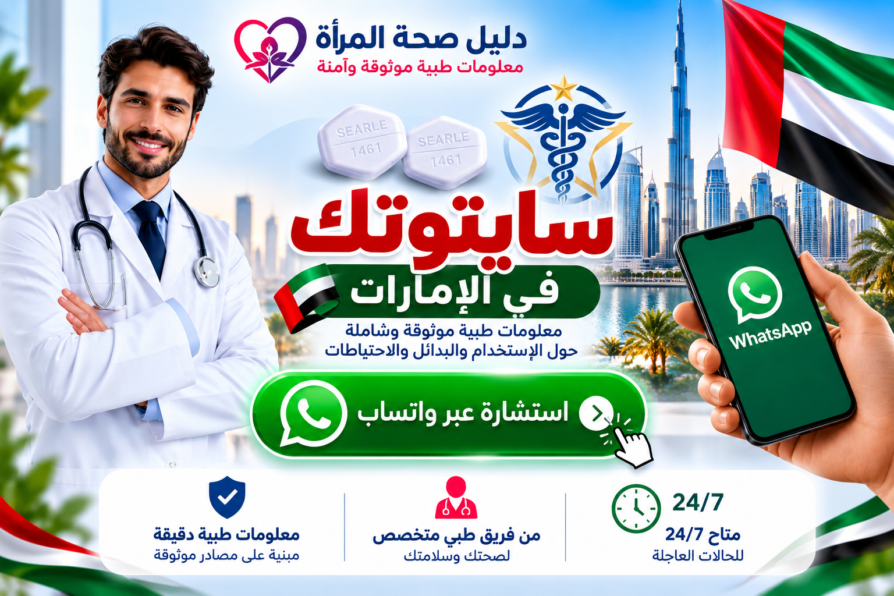

.webp)
سايتوتك في السعودية: دليل شامل للبحث عن سايتوتك والميزوبروستول في السعودية
تغطي هذه الصفحة الأسئلة والعبارات التي يستخدمها الباحث عند البحث عن سايتوتك في السعودية، سايتوتك النهدي، حبوب سايتوتك، Cytotec Saudi Arabia، وMisoprostol in Saudi Arabia، إضافة إلى البحث باسم المدينة مثل الرياض وجدة ومكة والمدينة والدمام والخبر والقصيم وتبوك وأبها. وتجمع الصفحة هذه الموضوعات في أقسام واضحة لتسهيل الوصول إلى المعلومات الصحية ذات الصلة.
ما هو سايتوتك Cytotec؟
سايتوتك Cytotec هو اسم تجاري مرتبط بمادة الميزوبروستول Misoprostol. وعند البحث عن اسم المنتج أو المادة الفعالة، من المهم التمييز بين الاسم التجاري والاسم العلمي، وبين المعلومات العامة وبين القرار الطبي الخاص بكل حالة.
الميزوبروستول Misoprostol في السعودية
يظهر الميزوبروستول في المصادر الطبية السعودية ضمن معلومات دوائية وصحية متعددة. وتوضح وزارة الصحة السعودية أهمية سؤال الطبيب أو الصيدلي قبل استخدام الأدوية أثناء الحمل، كما تعرض معلومات عن الحالات التي تستدعي تقييماً طبياً عاجلاً.
سايتوتك النهدي في السعودية
عبارة سايتوتك النهدي من عبارات البحث المحلية المهمة، ويستخدمها الباحث لمعرفة معلومات عن Cytotec أو المستحضرات التي تحتوي على الميزوبروستول ضمن قنوات الصيدليات. لكن نتيجة البحث وحدها لا تثبت وجود مخزون حالي في فرع معين؛ التوفر يتغير حسب المصدر الرسمي والمخزون والتنظيمات.
لهذا السبب تجمع هذه الصفحة بين كلمة سايتوتك النهدي وكلمات البحث القريبة منها مثل سايتوتك في السعودية، Cytotec Saudi، Misoprostol Saudi Arabia، حبوب سايتوتك، والميزوبروستول في السعودية دون تحويلها إلى ادعاء غير موثق عن المخزون.

اضغط على الصورة للتواصل عبر واتساب للاستفسار الصحي العام. لا تُرسل بيانات شخصية حساسة عبر المحادثة.
سايتوتك النهدي
مصطلح بحث مرتبط باسم الصيدلية والدواء، ويحتاج التحقق من المصدر الرسمي عند البحث عن حالة منتج محدد.
سايتوتك السعودية
مصطلح واسع يشمل البحث عن Cytotec وMisoprostol والمعلومات الدوائية داخل المملكة.
حبوب سايتوتك
عبارة شائعة في محركات البحث، ويجب فهم الاسم التجاري والمادة الفعالة والسياق الطبي.
سايتوتك والميزوبروستول وحبوب الإجهاض في السعودية
تظهر عبارات مثل حبوب إجهاض الحمل في السعودية وحبوب الإجهاض وسايتوتك للحمل في البحث، لكن هذه العبارات لا تكفي وحدها لتحديد التشخيص أو ملاءمة دواء لحالة معينة.
المحتوى الصحي الموثوق يجب أن يوضح أيضاً متى تكون الأعراض طارئة. وتذكر وزارة الصحة السعودية أن النزيف الشديد، وارتفاع الحرارة أو القشعريرة، والألم الشديد، وأعراض الحمل خارج الرحم مثل ألم البطن الشديد المستمر أو الدوخة الشديدة أو الإغماء، تستدعي تقييماً طبياً.
Cytotec
اسم تجاري معروف، ويجب الرجوع إلى العبوة والمصدر الرسمي للتحقق من المادة الفعالة والتركيز.
Misoprostol
الاسم العلمي للمادة الفعالة، وتظهر في مراجع صحية ودوائية سعودية.
سلامة الأدوية أثناء الحمل
وزارة الصحة السعودية تنصح بإخبار الطبيب أو الصيدلي بوجود الحمل قبل تناول أو صرف أي دواء.
تحتاج معلومات صحية قبل اتخاذ أي قرار؟
يمكنك طلب استشارة عامة عبر واتساب أو الرجوع إلى المصادر الصحية الرسمية. لا تعتمد على منشور مجهول أو إعلان قديم لتحديد علاج أو جرعة.
استشارة عامة عبر واتساب وزارة الصحة السعوديةسايتوتك في مدن السعودية
يبحث كثير من المستخدمين عن سايتوتك في السعودية وسايتوتك النهدي وحبوب سايتوتك وCytotec Saudi Arabia وMisoprostol Saudi Arabia، كما تظهر عمليات بحث محلية مثل سايتوتك الرياض، سايتوتك جدة، سايتوتك مكة، سايتوتك المدينة المنورة، سايتوتك الدمام، سايتوتك الخبر، سايتوتك الطائف، سايتوتك تبوك، سايتوتك أبها، سايتوتك جازان، سايتوتك نجران، سايتوتك حائل، سايتوتك القصيم، سايتوتك بريدة، سايتوتك عنيزة، سايتوتك الجبيل، سايتوتك الأحساء، سايتوتك الهفوف، سايتوتك حفر الباطن، سايتوتك سكاكا وسايتوتك عرعر. وتشمل عبارات البحث القريبة أيضاً الميزوبروستول في السعودية، Misoprostol in Saudi Arabia، حبوب الإجهاض في السعودية وحبوب إجهاض الحمل. هنا يمكن الانتقال بين المعلومات حسب المدينة والموضوع للوصول إلى محتوى صحي أكثر صلة بالسؤال الذي يبحث عنه المستخدم.
الرياض والمنطقة الوسطى
مكة والمدينة والطائف
المنطقة الشرقية
الشمال والجنوب والغرب
المواقع الصحية والمعلومات المرتبطة
تربط هذه الصفحة بمواقع متخصصة في صحة المرأة والمعلومات الصحية، بحيث ينتقل القارئ من موضوع إلى آخر ضمن سياق واضح ومترابط.
الأسئلة الشائعة حول سايتوتك النهدي وسايتوتك في السعودية
هل سايتوتك النهدي هو نفسه Cytotec؟
Cytotec اسم تجاري مرتبط بالميزوبروستول، بينما Misoprostol هو الاسم العلمي للمادة الفعالة. يجب التحقق من بيانات المنتج والمصدر الرسمي.
هل ظهور سايتوتك النهدي في جوجل يعني أن المنتج متوفر؟
لا. ترتيب نتيجة البحث لا يثبت المخزون الحالي في فرع محدد، لذلك يجب الرجوع إلى القنوات الرسمية عند الحاجة إلى معلومة عن منتج بعينه.
ما الكلمات المرتبطة بسايتوتك في السعودية؟
منها سايتوتك السعودية، سايتوتك النهدي، Cytotec Saudi Arabia، Misoprostol Saudi، حبوب سايتوتك، الميزوبروستول في السعودية، وسايتوتك مع اسم المدينة مثل الرياض وجدة ومكة والمدينة والدمام والخبر.
ما المقصود بعبارة حبوب الإجهاض في السعودية؟
هي عبارة بحث عامة قد تشير إلى أدوية أو معلومات مرتبطة بإنهاء الحمل أو حالات فقدان الحمل. لا يمكن تحديد العلاج المناسب من عبارة بحث فقط.
ما المدن التي تغطيها الصفحة؟
الرياض، جدة، مكة، المدينة المنورة، الدمام، الخبر، الظهران، القطيف، الجبيل، الأحساء، الهفوف، حفر الباطن، الطائف، ينبع، تبوك، حائل، القصيم، بريدة، عنيزة، أبها، خميس مشيط، جازان، نجران، الباحة، سكاكا وعرعر وغيرها.
متى يجب طلب رعاية طبية عاجلة؟
عند وجود نزيف شديد، ألم شديد أو مستمر، حرارة أو قشعريرة، دوخة شديدة أو إغماء، أو أعراض قد تشير إلى حمل خارج الرحم، يجب طلب تقييم طبي عاجل.
هل تقدم الصفحة جرعات أو بروتوكولات؟
لا. الصفحة مصممة للمعلومات العامة وتنظيم البحث والربط بالمصادر، وليست وصفة علاجية.